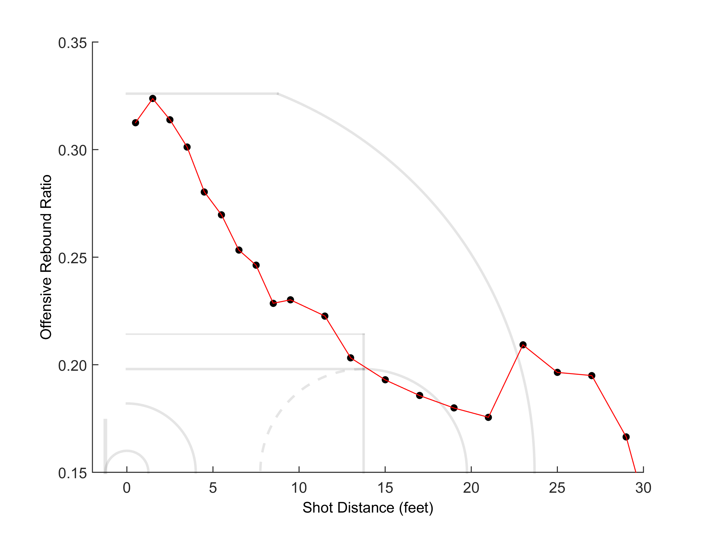
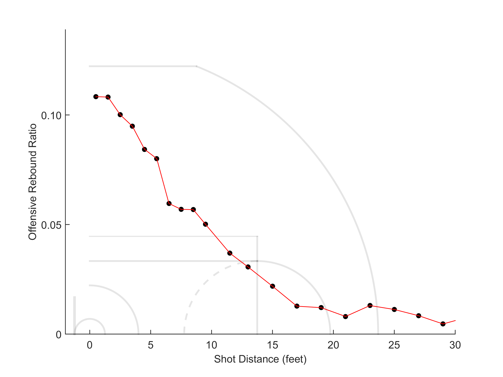
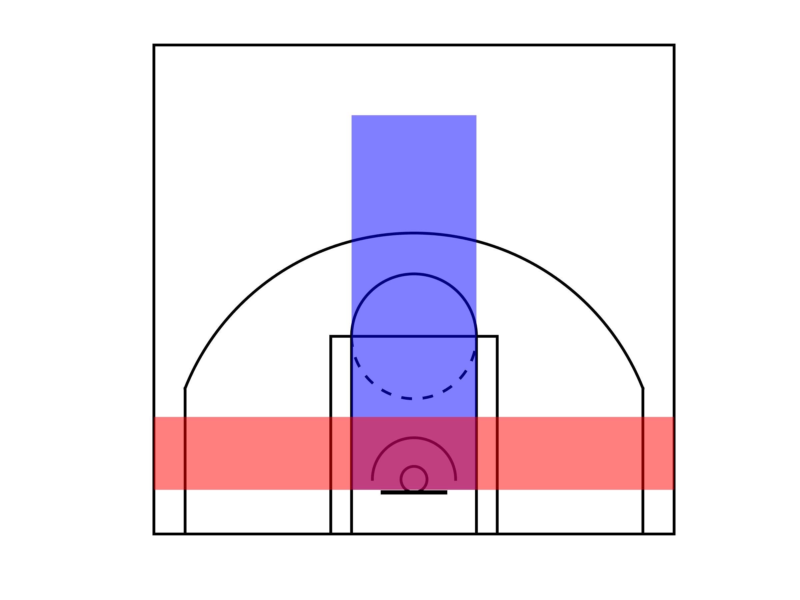
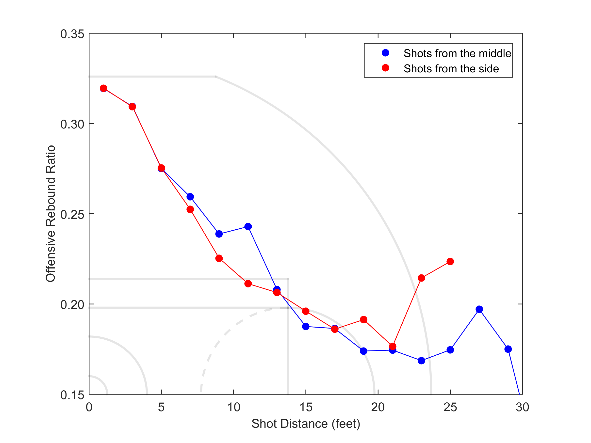
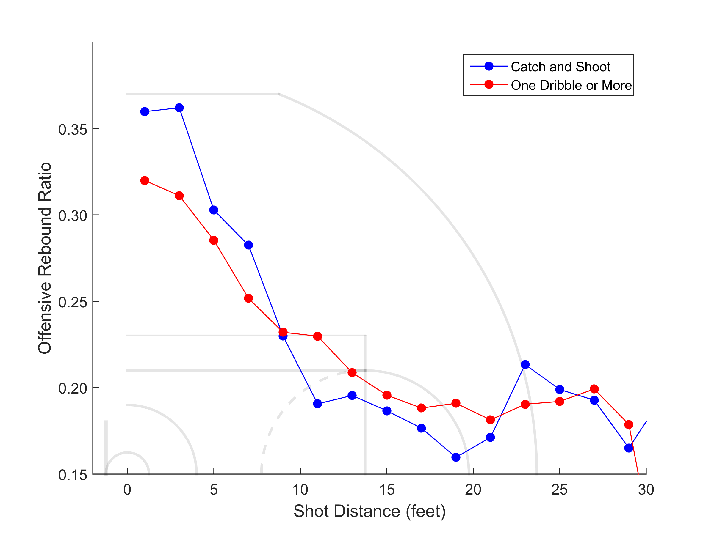
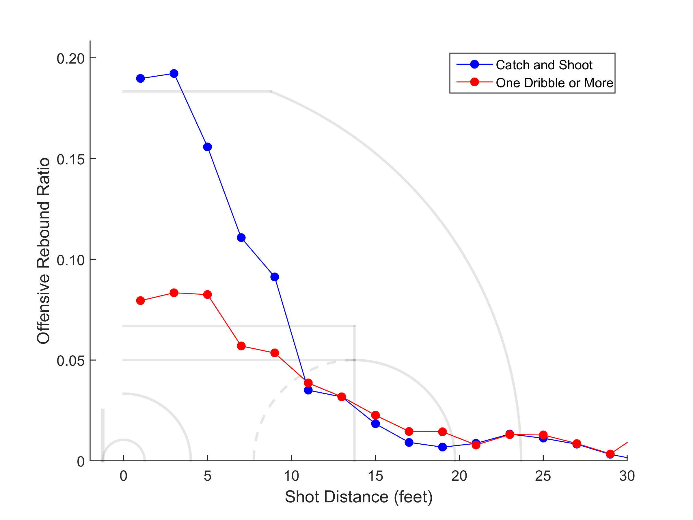
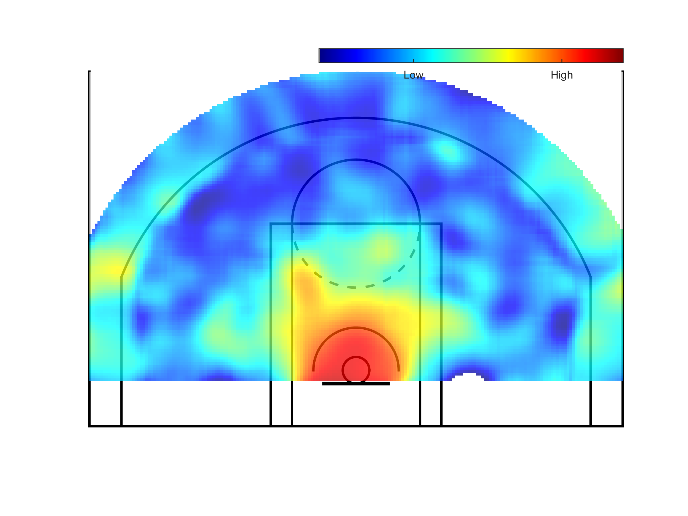

Ever since I started playing basketball I remember hearing that it is easier to take an offensive rebound when shooting far away from the basket because the ball bounces further. Is that true? In recent years the NBA is sharing a tremendous amount of data on its website through the NBA API and now question like these become something that is (fairly) straightforward to answer. The argumentative part of me misses the days were you have an old fashion argument that lasts forever without someone pulling out their smartphone to google the answer. The nerdy part of me is just thrilled to harness the power of my laptop to answer these kind of questions. In this post I will explore the chances of taking offensive rebounds for different shooting scenarios.
The NBA now records the shot coordinates for every shot taken since 2009. The play by play for each game is also available. By using the shot coordinates for all the shots taken in the 2014-2015 season and by correlating each shot with the play by play I was able to determine whether a missed shot was offensively or defensively rebounded. From that data we can extract the offensive rebound ratio (ORR) - (offensive rebounds)/(offensive rebounds + defensive rebounds). Since I have the coordinates of each shot, this ratio can be plotted as a function of the shot distance. Here are the results:  Fig 1: Offensive rebound ratio as a function of shot distance.
It is clear from the data that the closer the shooter is to the basket the more likely to be an offensive rebound if they miss the shot. So the myth that offensive rebounds are easier to grab when shooting far away from the basket is wrong! We see a steady decrease as we shot further from the basket. One interesting feature is the bump at 23 feet. The short 3 pointer is at 22 feet and is included in that data point. So for some reason there is an increase in the probability of taking an offensive rebound when shooting a 3 over a long 2. We will get back to that.
So why is it easier to take an offensive rebound when the shooter is close to the basket? One explanation is that the shooter is more likely to rebound their own missed shot if they are close to the basket. Luckily, we can also plot that data:  Fig 2: Own shot offensive rebounds as a function of shooting distance. Only offensive rebounds recovered by the shooter are included.
This makes sense. The closer the shooter is to the basket the higher the chances they will grab their own missed shot. This is the main reason the ORR is higher when shooting close to the basket.
The next question I wanted to answer is whether there is any change in the chances of taking an offensive rebound because of the presence of the backboard. My experience tells me the ball bounces differently when the backboard is not involved. It seems like it is harder to predict the bounce of the ball when shooting from the corner. So I divided all the shots into shots taken from the center and shots taken from the side. I also thought that if it easier to take an offensive rebound for side shots that can explain the higher ORR for 3's. Since so many corner 3's are taken these days that could cause an artificial bump in the ORR (if the ORR for side shots is higher across the board). The division of the court can be seen in the illustration below:  Fig 3: The court can be divided to center shots (depicted in blue) and side shots (depicted in red).
and the results or the ORR:  Fig 4: Offensive rebound ratio as a function of shot distance for shots taken from the center (blue) and from the side (red).
We can see that the curves look similar with the exception of the data starting from the corner 3 where there is a big increase in the ORR compared to the center shots. The corner 3 is at 22 feet where the center 3 is at 23 feet and 9 inches. For the center 3s the increase is not as high and only appears for fairly far 3s (26 feet -28 feet). For center 3's taken from 24 feet-26 feet there is no real increase in the ORR. For longer 3's the statistics was lower and the increase in ORR needs to be regarded with caution. What is so special about the corner 3 that makes it much easier to rebound offensively?
Most corner 3's are catch and shoot and if it is easier to offensively rebound a catch and shoot that can explain the increase in ORR for corner 3s. We are in luck since the NBA also has information about the number of dribbles and possession time before each shot. How does that affect the probability of taking offensive rebounds?  Fig 5: Offensive rebound ratio broken down into catch and shoot (blue) and pullup jumpers\one dribble or more (red). Catch and shoot is defined as 0 dribbles and ball possession time of 2 sec or less. One dribble or more is exactly what it sounds. This is basically pullup jumpers above a distance of 10 feet.
For close range, it is easier to take an offensive rebound when catching and shooting. One explanation is better positioning of the offensive player when they shoot without dribbling. Also, when shooting off the dribble the shooter is more likely to be off balance therefore decreasing the chances of the shooter recovering their own rebound. This can be checked when plotting the own offensive rebounds for catch and shoot vs. one dribble or more:  Fig 6: Own shot offensive rebound ratio for catch and shoot (blue) and one dribble or more (red).
As can be seen, closer than 10 feet, it is much easier to rebound your own missed shot when shooting a catch and shot vs. one dribble or more. In fact, that chances of taking your own rebound during a catch and shoot under the basket is almost at 20%. That is extremely high!
Going back to Fig. 5, for mid-range shots the chances of taking an offensive rebound off a pullup jumper is slightly higher. One possible explanation is that the defense is slightly off position trying to close out the shooter. Finally, there is no noticeable increase in the ORR for pullup 3s while there is a large increase for catch and shoot. The only explanation I can think of is the position of the offensive players on the court during a catch and shoot 3 pointer. When posting up and passing to a 3 point shooter the offensive player should be closer to the basket. Also, when driving and kicking out to an outside shooter the passer should be closer to the basket. In both cases there is an offensive player close to the basket thus increasing the chance of an offensive rebound.
Last figure is a heatmap of the ORR for the 2014-2015 season:  Fig 7: Heatmap of offensive rebound ratio for all shots in the 2014-2015 season.
This heatmap summarizes a few of the above figures. The highest chances of taking an offensive rebound are when shooting close to the basket. It is also apparent that there is a higher chance of taking an offensive rebound from a corner 3 compared to a long 2 but that increase does not exist for center shots.
Note: after I almost finalized this post I came across the following post:
http://courtvisionanalytics.com/where-do-rebounds-go/
One great thing we can extract from the above post is that the laws of physics work! The ball indeed bounces further when the shot is taken further away. Furthermore, the data shows that the ball is rebounded much further from the rim (on average) when shooting from the side vs center. This still does not completely explain why the offensive rebound ratio increases at once from 3's. Maybe the ball is more likely to bounce above the first line of defenders but is it just a coincidence that it happens exactly at the 3 point line? In my opinion this is statistically unlikely and can only be explained by different positioning of the offense\defense when shooting corner 3's.
The same trends shown in the data I analyzed can be also seen in the above post.
Conclusions:
- The NBA API is awesome!
- The closer the shooter is to the basket the higher the offensive rebound ratio. Own rebounds are the main reason for that.
- While the ball does bounce differently (further) from the basket for side shots (see the link from courtvisionanalytics), the ORR does not change much except for corner 3s. One of the reason must be, that unlike myself, NBA players are tall and athletic and can still rebound most shots close to the rim.
- Catch and shot vs. off the dribble shots lead to very different ORR distribution.
- Heatmaps are cool and their contrast changes when you move your screen.
- There is a strong correlation between having a fun hobby and being less helpful around the house (data not shown).
Technical information:
I used MATLAB to scrape the data, correlate the different information and plot the data.
The NBA defines catch and shot by 0 dribbles and ball possession time of 2 seconds or less. Pullup jumpers are defined as 1 or more dribble and a shot distance over 10 feet. Since we are also interested in the data within 10 feet.
I called that data "one dribble or more".
I was not able to correlate about 3% of the catch and shoot - pullup jumpers data due to inaccuracies in the time of game and shot distance. This data was ignored.
Helpful links:
- http://www.danielforsyth.me/exploring_nba_data_in_python/
- http://www.gregreda.com/2015/02/15/web-scraping-finding-the-api/
- https://pypi.python.org/pypi/nbastats/1.0.0
- http://savvastjortjoglou.com/nba-shot-sharts.html
Comments
comments powered by Disqus